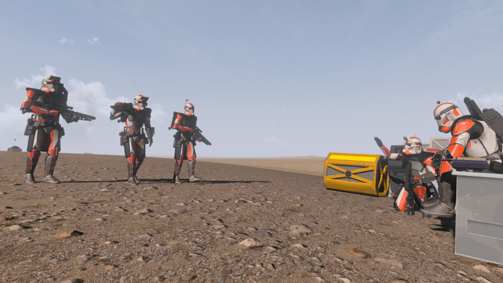
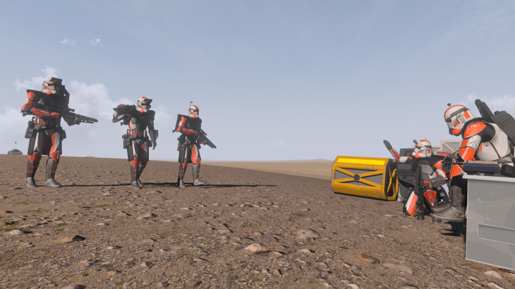

Gravedigger Engineer Detachment
Gravedigger is our Engineering Detachment of the 332nd. They help keep our piolets in the air with ammo and fuel so our ground forces have support. They are also available to send long-range missiles when air can not reach a target due to anti-air. They are a key support group for the legion that assists everyone.


 
